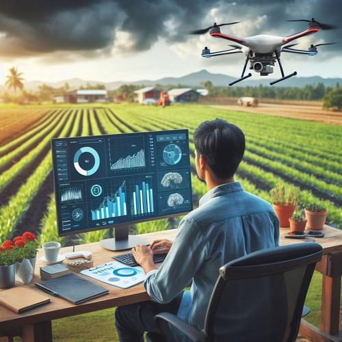
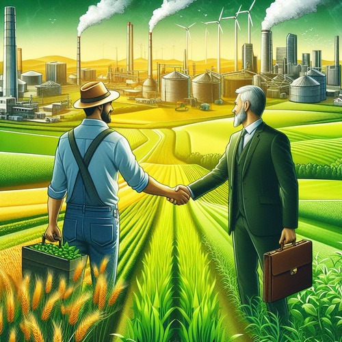

Exhaustive Data Analysis — Farmalytics uses historical data to predict
crop yield Correctness & Validness with zkML — Farmalytics makes sure
that the predictions are not manipulated by any third party. Optimized
Resource Management — Farmalytics can predict future area needs based
on historical data and current market conditions.


A Symbiotic Relationship in Agriculture
Incentives for Farmers — We provide farmers with rewards based on
their efforts and accurate crop predictions. Data-Driven Marketplace—
Big companies leverage our platform to access real-time crop
prediction data, enabling informed business decisions. Mutually
Beneficial Ecosystem — This unique system connects farmers and
companies, fostering collaboration and shared success in the
agricultural sector.
FEATURES
1. Unpredictable yields: Farmers receive accurate, real-time data on
weather, soil, and optimal crops, leading to informed decisions and
increased yields.
3. Inefficient resource use: Real-time data and insights help farmers
optimize irrigation, fertilizer use, and other practices, reducing
environmental impact.
BENEFITS
1. Increased crop yields and profitability: Farmers make informed
decisions, eliminate exploitative practices, and optimize resource
use.
2. Reduced environmental impact: Optimized resource use and reduced
chemical reliance lead to a more sustainable agricultural sector.
3.Empowered farmers: Information, resources, and market access empower
farmers to make informed decisions and improve their livelihoods.